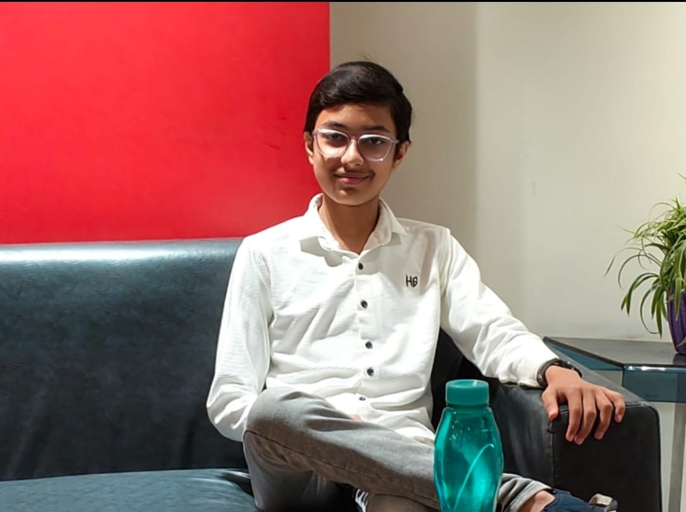

Spandan Bhattacharya
Student Developer | Space Science Enthusiast | Singer
Global Nominee & Galactic Problem Solver in the NASA Space Apps Challenge 2025, and contributor to preliminary asteroid detection through the IASC Asteroid Search Campaign.
About
I am a highly motivated student with strong interests in mathematics, programming, robotics, and space science. Parallel to my scientific pursuits, I have a 7-year foundation in Indian Classical Music, specializing in Ragas and Khayal. I aim to combine my analytical skills with creative innovation to build impactful projects beyond the classroom.

My Journey & Achievements
NASA Space Apps Challenge 2025
Global Nominee & Galactic Problem Solver, recognized among the top 1100 projects globally for innovative problem-solving.
Asteroid Discovery
Contributed to the identification of a preliminary asteroid through the IASC Asteroid Search Campaign.
CSIR Jiggyasa Programme 2025
Engaged as a visiting student researcher at CGCRI labs.
National AI Quiz Excellence
Recognized by the Indian Government for contributions and understanding of AI & its Impact.
My Toolkit & Curiosities
My technical foundation is built on Python, Java, and microcontroller programming (Arduino/ESP32). I am deeply curious about how mathematical concepts translate into functional robotics, AI, and embedded systems. Beyond the screen, I find balance and creative expression in Indian Classical Music, specializing in Ragas and Khayal.
Focus Areas
Astronomy & Scientific Exploration
Exploring the cosmos through data and observational analysis.
Python Programming
Leveraging Python for scientific computing and automation.
Robotics & Embedded Systems
Bridging the gap between hardware and software.
Research-Oriented Technical Projects
Applying structured reasoning to complex problems.
Scientific Data Visualization
Making complex data intuitive and clear.
Music & Vocal Performance
A creative parallel to my technical pursuits.
Music
In addition to technical and scientific interests, Spandan Bhattacharya also shares vocal performances publicly through the YouTube channel Gaan er Spandan, reflecting a parallel creative identity rooted in music.
Visit Music Channel